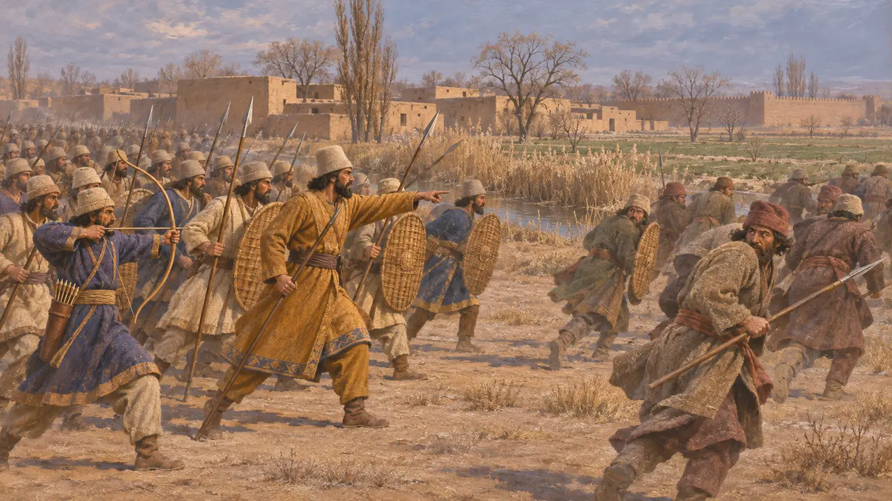
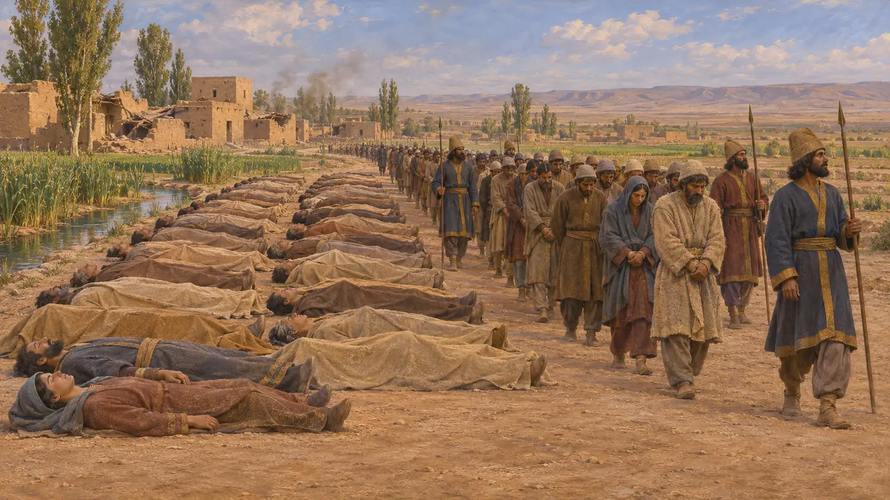
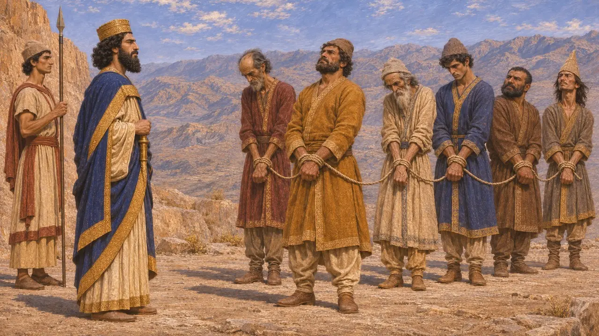
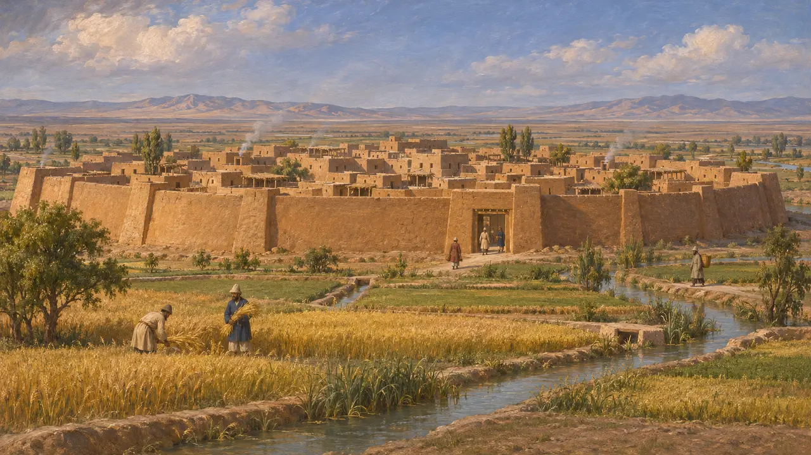

Margiana
Tierra de oasis del Murghab, en Asia Central, que se alzó bajo Frada en 521 a. e. c.
En el juego: Nivel 3: La Mentira
Margiana, en persa antiguo Margush, era el oasis del río Murghab, en el actual Turkmenistán, en torno a la que más tarde sería la ciudad de Merv. En 521 a. e. c. se alzó contra Darío bajo el mando de un hombre llamado Frada, y el sátrapa de Bactria, Dadarshi, la sofocó.
En el juego: Margiana se menciona en la Crónica de los niveles de Bagastana y Parsa y en las campañas de los generales del Rey, entre las tierras que se alzaron en 522-521 a. e. c.

La revuelta de Frada
En los documentosDarío dice que la tierra llamada Margush se rebeló y nombró jefe a un margiano llamado Frada. Envió un mensaje a Dadarshi, un persa, su sátrapa en Bactria, que marchó contra los margianos y los derrotó el 23 de Atriyadiya, hacia diciembre del 521 a. e. c.
Behistun inscription §38

El recuento de los muertos
En los documentosEl texto en persa antiguo no da cifras, pero la versión babilonia de la inscripción de Behistún dice que murieron 55,243 margianos y que 6,972 fueron capturados. Los historiadores tratan tales recuentos con cautela, pero su magnitud sugiere una guerra dura en el oasis.
Behistun inscription, Babylonian version §38


Un antiguo oasis
En los documentosLas excavaciones de Gonur Tepe y de otros yacimientos muestran que el delta del Murghab tenía ciudades amuralladas y campos de regadío desde la Edad del Bronce. En el periodo aqueménida, su centro era la ciudad amurallada de Erk Kala, en Merv.
V. Sarianidi, excavations at Gonur Tepe; the Merv excavations
Fuentes
- Behistun inscription §21, §38, §52
- P. Briant, From Cyrus to Alexander, 2002